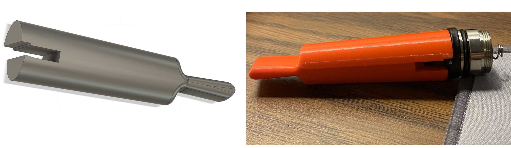
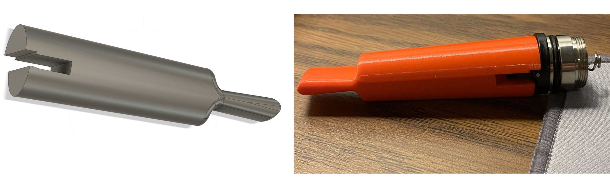

ER-SEE-P: A Duodenoscope Ultrasound Attachment to Aid Navigation to the Bile and Pancreatic Ducts in Endoscopic surgery
DAP Reviews: A Decentralized Review System using Blockchain Technology, "DAP Reviews – Trust the Crowd, Not the Cloud."
Automation Projects including UV Sensor instalttion for label presence and Color Sensor to detect package orientation
3D printing and and Reverse Engineering projects

 

What Others Say
"Colten's work on the ERCP Duodenoscope design was incredibly innovative and efficient. His attention to detail made a significant impact on our project."
"The Decentralized Review System Colten built exceeded all expectations. It was easy to use, and the smart contract was implemented perfectly."
"I highly recommend Colten's work in the IoT space. His IoT Sensor Array project was a game-changer for our smart home solutions."